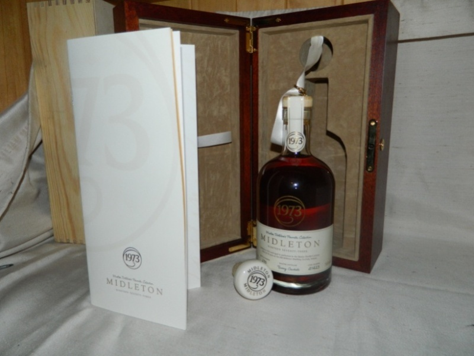

I've seen that the Midleton Master Distiller's come from 2 casks ,41421 and 41422 on various sites but always assumed it was a mistake, because mine comes from cask number 41423.
I checked Adrian's site and he has a photo from 41422
http://i155.photobucket.com/albums/s285 ... 973Ltd.jpg
I'll attach a picture of mine below. I came across this on the net, it appears to be from cask 41421
http://www.drinkstore.ie/MIDDLETON-1973-700ML-10103317/
and this on is from Midleton and it too appears to be bottle 260 from 41421
http://www.singlepotstill.com/midletono ... ther_1973&
the bottle numbers are confusing too, the one above appears to be in the 200's
IrishWhiskeyChaser's photo is 078 and mine is 230.
I would have though they have 1- 400 from one and 401-800 from the other.
Am I mistaken that there's more than 2 casks?
NOTE: This forum is no longer active. This is an archive copy of the forum as it was on 10 March 2018.
Midleton Master Distillers 1973 Cask numbers.
3 posts
• Page 1 of 1
Midleton Master Distillers 1973 Cask numbers.
 by Good Whiskey Hunting » Sun Jun 17, 2012 8:49 pm
by Good Whiskey Hunting » Sun Jun 17, 2012 8:49 pm
{kind=link}
- Attachments
-
- 
- Cask 41423 bottle 230
- 1973MasterDistiller30YearOld.JPG (117.25 KiB) Viewed 823 times
Four blessings upon you - Older whiskey - Younger women - Faster horses - More money
https://twitter.com/potstillwhiskey
https://facebook.com/potstillwhiskey/
https://www.instagram.com/potstillwhiskey/
https://twitter.com/potstillwhiskey
https://facebook.com/potstillwhiskey/
https://www.instagram.com/potstillwhiskey/
-

Good Whiskey Hunting - Fully mature Cask
- Posts: 1832
- Joined: Tue Dec 01, 2009 11:43 pm
- Location: Wexford
Re: Midleton Master Distillers 1973 Cask numbers.
 by TheWhiskeyBro » Sun Jun 17, 2012 11:04 pm
by TheWhiskeyBro » Sun Jun 17, 2012 11:04 pm
Given they are cask strength, 266 bottles per cask would tally with the release of cask #41421 cask #41422 & cask #41423
Question is can we find a higher bottle no than 266?
Cask #41421 = bottle #279 on http://www.whiskybase.com
Cask #41422 = bottle #078
Cask #41423 = bottle #210 on http://www.homeofwhisky.blogspot.com
bottle #269 for good whiskey hunting
Question is can we find a higher bottle no than 266?
Cask #41421 = bottle #279 on http://www.whiskybase.com
Cask #41422 = bottle #078
Cask #41423 = bottle #210 on http://www.homeofwhisky.blogspot.com
bottle #269 for good whiskey hunting
- TheWhiskeyBro
- Hogshead
- Posts: 962
- Joined: Tue Mar 17, 2009 11:44 am
- Location: Sandyford, Dublin
Re: Midleton Master Distillers 1973 Cask numbers.
 by Good Whiskey Hunting » Mon Jun 18, 2012 1:04 am
by Good Whiskey Hunting » Mon Jun 18, 2012 1:04 am
I'd mentioned to whiskybase.com that my bottle was from cask 41423 and noticed it is now included.
I'll check around different sites and see if I an idea what sequence came from which cask.
Here's another picture of that one Cask #41421 = bottle #279 I found.
http://static3.wine-searcher.net/images ... 348096.jpg
this is also from 41423 = #105
http://images1.bonhams.com/image?src=Im ... m=1.000000
and just to trough another spanner in the works, this is bottle #025 from cask 41423. I can't figure out what way they may go now.
I'll check around different sites and see if I an idea what sequence came from which cask.
Here's another picture of that one Cask #41421 = bottle #279 I found.
http://static3.wine-searcher.net/images ... 348096.jpg
{kind=link}
this is also from 41423 = #105
http://images1.bonhams.com/image?src=Im ... m=1.000000
{kind=link}
and just to trough another spanner in the works, this is bottle #025 from cask 41423. I can't figure out what way they may go now.
Four blessings upon you - Older whiskey - Younger women - Faster horses - More money
https://twitter.com/potstillwhiskey
https://facebook.com/potstillwhiskey/
https://www.instagram.com/potstillwhiskey/
https://twitter.com/potstillwhiskey
https://facebook.com/potstillwhiskey/
https://www.instagram.com/potstillwhiskey/
-
Good Whiskey Hunting - Fully mature Cask
- Posts: 1832
- Joined: Tue Dec 01, 2009 11:43 pm
- Location: Wexford
3 posts
• Page 1 of 1